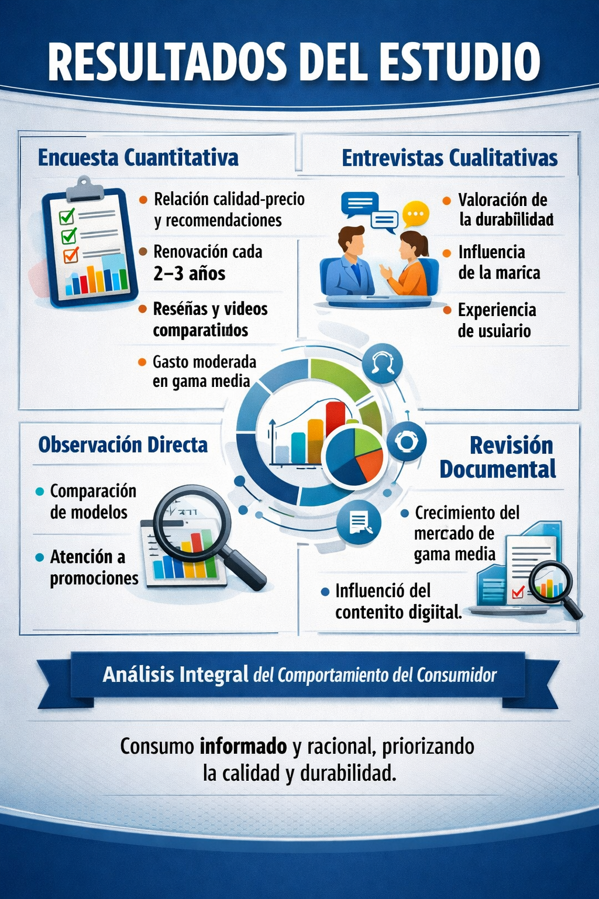
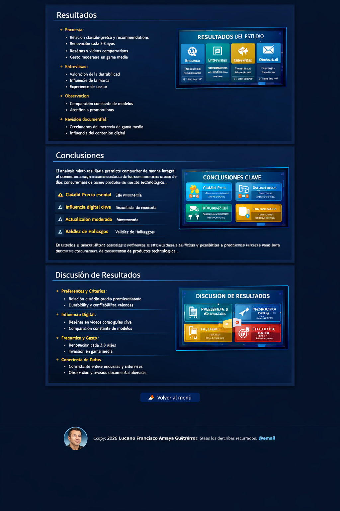

Resultados
Los resultados obtenidos a partir de las distintas técnicas de recolección de datos permitieron identificar patrones, percepciones y comportamientos relacionados con el consumo de productos tecnológicos.
Encuesta
- Relación calidad-precio y recomendaciones
- Renovación cada 2-3 años
- Reseñas y videos comparativos
- Gasto moderado en gama media
Entrevistas
- Valoración de la durabilidad
- Influencia de la marca
- Experiencia de usuario
Observación
- Comparación constante de modelos
- Atención a promociones
Revisión documental
- Crecimiento del mercado de gama media
- Influencia del contenido digital
En conjunto, los resultados muestran una coherencia entre los datos cuantitativos y cualitativos.

Discusión de Resultados
Preferencias y criterios de compra
La relación calidad-precio es el criterio más determinante en la elección de productos tecnológicos.
Influencia de la información digital
Las reseñas en línea y los videos comparativos se han convertido en fuentes clave para la toma de decisiones.
Frecuencia de actualización y gasto
La mayoría renueva sus dispositivos cada dos o tres años, con un gasto moderado centrado en productos de gama media.
Coherencia entre técnicas
La triangulación de datos muestra una fuerte coherencia entre encuestas, entrevistas, observación y revisión documental.
Los consumidores tecnológicos valoran la durabilidad y priorizan la calidad-precio.
